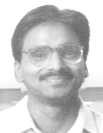

Rajeev Kumar, Ph.D.
Professor
School of Computer & Systems Sciences
Jawaharlal Nehru University (JNU) New Delhi, India
Office : SC&SS Building, JNU New Delhi
Voice: (+91) 95-9905-3655, 94-3474-7400; 011-2673-8789 (O)
Email: rajeevkumar.cse @ gmail.com
Web:
rajeevkumar-cse.github.io
Blog: eklavyajee06.blogspot.com/
| @ SC&SS, JNU (2015 - Present) | ||||||||||||
| Algorithms | Machine Learning | Compiler Construction | ||||||||||
| Academic Ethics | Research Methodology | Object Oriented Software Engineering | ||||||||||
| @ CSE, IIT KGP (2000 - 15) | ||||||||||||
| Compiler Construction | Software Engineering | Programming & Data Structures | ||||||||||
| Advances in Compiler Construction | Object Oriented System (Design/Implementation) | Multimedia Systems | ||||||||||
| @ CSE, IIT Kanpur (2005 - 06; 2013 - 14) | ||||||||||||
| Compiler Design | Topics in OO Lang. Implementation | Foundations of Computing | ||||||||||
| Data Structures & Algorithms | Self-Study (Mentored) Course | |||||||||||
| @ CSIS, BITS - Pilani (1997 - 2000) | ||||||||||||
| Compiler Construction | Data Structures & Algorithms | Object Oriented Programming | ||||||||||
| Multimedia Computing | Image Processing & Vision | Artificial Intelligence | ||||||||||